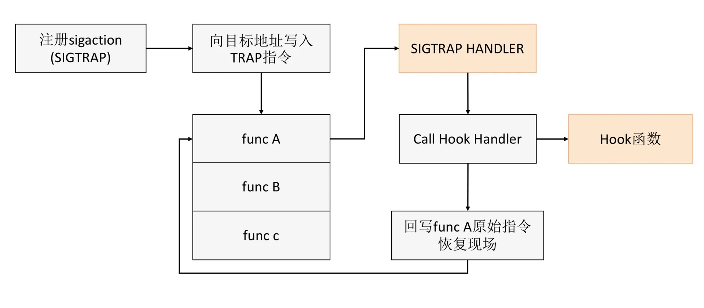
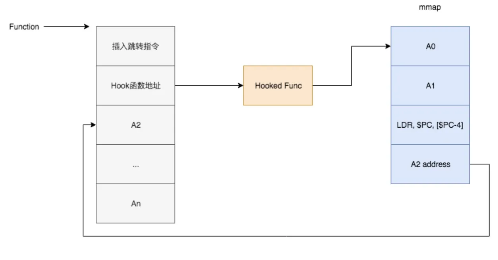
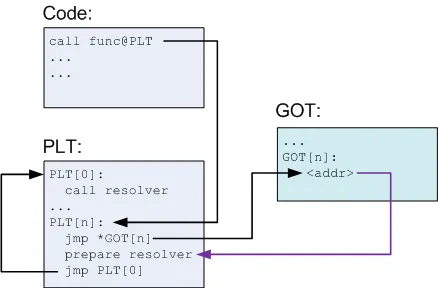

Hook机制在测试领域的应用
1. 前言
All problems in computer science can be solved by another level of indirection. —– David Wheeler
Hook 又名钩子，是一种机制，通过 Hook 机制，我们能拦截程序的执行，在中途插入我们的代码，来达成各种各样的目的。
我更喜欢把 Hook 理解为一种思路，一种在计算机体系的软硬件层面，都想办法去插入拦截的思路。例如有一款硬件叫 Throwing Star LAN Tap，只要把网线断掉，接上它，就能实现抓包嗅探，而被嗅探的对象，根本不知道它的存在。
扯远了，回到测试。如果你曾经想过，“能否在开发不改代码的前提下，验证我的用例？”，那就可以了解一下 Hook 机制。实际工作中，在问题定位，单元测试，性能测试等多个场景，都可以应用 Hook 机制。有很多库，都提供了自定义的 hook 机制，这个不在本文的讨论范围，本文讨论的是不需要应用配合的机制。
下文会分以下几个部分展开：
- 软件层面，我们最常接触的层面，分别有哪些 Hook 机制。
- 不同的测试场景，可以在哪些层面，通过什么工具来完成。
2. 分层视角
上面说过，在不同的系统，不同的语言上，有各种各样的 Hook 实现。如何挑选不同的 Hook 方案，解决实际的问题，要求我们先对技术体系，有一个分层的视角，明确问题，或者解决方案所处的层面。如果没有分层视角，那么看问题就像看一个完整的洋葱，只能从表面找解法。
Brendan Gregg 在展示他的工具集的时候，经常会带上一个图。从应用到内核，都划分了不同的层面，每个层面都有不同的工具，很清晰，就像切开一个洋葱。

我们最常遇到的场景，一般都在 System Call Interface(系统调用) 往上的用户态，只需要在 Applications，Runtimes，System Libraries 层面找解法。Applications 就是我们的应用，Runtimes 一般是指 JVM，Lua，或者 Go 这类语言自带的运行时，System Libraries 是底下的第三方依赖，例如 libc.so，openssl.so。
下文 Applications 统称应用，Runtimes 统称运行时，System Libraries 统称系统库。
System Call Interface 往下，内核态，虽然不常遇到，但我有个预判，后续会被 BPF 统治。如果感兴趣，只需要了解 BPF 就好，BPF 后续甚至有统治用户态的可能。
3. 多种 Hook 机制及原理
3.1 LD_PRELOAD 环境变量
LD_PRELOAD 放到最前面讲，因为它是操作系统的 linker 提供的，最简单易用的机制。它允许我们干预动态库的加载过程，把 LD_PRELOAD 指定的动态库，插入到加载顺序的最前面，以此来实现方法拦截。
3.2 Trap Hook
Trap Hook 是指修改进程内存，在指定的位置，插入对应 CPU 体系的 Trap 指令，例如 x86 体系的 INT3。这样程序在执行到这里的时候，会被中断，转向对应的处理函数。常见的 gcc，lldb 等调试器，就是用的 Trap Hook。我们也可以利用这个原理，实现其他用途的应用，例如下文的 kcov。

3.3 Inline Hook
跟 Trap Hook 类似，不过 Inline Hook 插入的是跳转指令，而不是中断指令，例如 x86 的 JMP。

在参考文档 x86-api-hooking-demystified 中，有更多的方法，关于在函数的入口跳转到另外一个函数，然后再回来。作者还附带了代码在 jbremer/cuckoomon。
3.4 GOT/PLT Hook
GOT 和 PLT 分别对应进程运行时，linker 做地址重定位后形成的函数地址表，它们之间的关系如下。图中黑色箭头为跳转，紫色为指针。

这个过程简述如下：
- 我们在代码中，调用一个外部函数，例如名字为 func，编译器编译的时候会改成 call func@plt。
- 程序执行到 func 的时候，会跳到 PLT[n]，PLT[n] 会跳转到 GOT[n]。第一次调用的时候，函数地址还未被 linker 解析。所以这个时候 GOT[n] 的 addr 指针指向的是 PLT[0] 去触发函数地址解析。 一旦解析完成，那么 GOT[n] 的 addr 指针会被改写为实际的函数指针，第二次调用的时候，就会直接执行，不需要再次解析。
- GOT/PLT Hook 的原理就是，既然 linker 能修改跳转表，那我们也可以。修改完跳转表后，程序的外部函数调用就被拦截了。
3.4 运行时提供
- Java，JVM 提供了 Java Agent 机制，允许我们在 JVM 启动的时候，修改实际运行的字节码。虽然不用修改代码，但是对运行时有侵入，实际运行的字节码，之前的应用代码。
- Lua，Lua 标准库提供了 debug.hook，允许我们逐行，或者逐函数来拦截。
3.5 内核提供
- Linux 内核提供 uprobe，实现对进程函数的拦截。
4. 场景和工具
这里仅列出我自己实际接触使用过的，也不可能列全。同样场景，用别的原理实现的工具也没列进来。总之，思路更重要。
4.1 功能测试 & 问题排查
上面提到，有时候我们会遇到一类问题，如果开发不修改代码，则这个用例很难测，或者问题不好查。这类问题，在不同层面可以怎么解决呢？
4.1.1 应用
- 各种调试器。通过下断点的方式，在运行时修改程序，例如修改函数的返回值。
4.1.2 运行时
- arthas，Java 应用诊断利器，其利用了 Java Agent 机制。
4.1.3 系统库
- libflu，利用 LD_PRELOAD，允许在运行时注入故障。
- libfaketime，利用 LD_PRELOAD，运行在运行时，修改应用通过系统库函数获取到的时间。
- AddressSanitizer，利用 LD_PRELOAD，辅助排查各种内存相关问题。由于被 LLVM 和 gcc 集成，目前非常流行，也能工作在多个系统。
- memory-leak-detector，利用 Inline Hook 和 PLT Hook，在运行时拦截 malloc，free，mmap，unmap 等系统库函数，统计调用堆栈，用于排查内存泄露。我最近把它移植到了鸿蒙，myzhan/HarmonyLeaksDetector。
- ecapture，利用 BPF 和 uprobe，实现应用层的抓包。因为它直接 hook 在 openssl 函数上面，在数据被加密前就被读取出来，所以传输过程的加密对它无效。
4.2 自动化测试
4.2.1 应用
- kcov，利用 Trap Hook，实现 C 代码的覆盖率统计，适用于 linux 和 mac。
- OpenCppCoverage，利用 Trap Hook，实现 C 代码的覆盖率统计，适用于 windows。
- mockey 和 gomonkey，利用 Inline Hook，实现 Go 代码的函数 Mock，在写单测的时候，可以控制执行范围。
4.2.2 运行时
- luacov，利用 lua 提供的 debug hook，实现 lua 覆盖率统计。
4.3 性能测试
4.3.1 应用
- lperf，利用 Trap Hook，让运行时的 Lua 进程停下来，找到 L 指针，然后定时读取这块的内存，进行 Lua 的执行堆栈采样。
- pyspy，利用 Trap Hook，让运行时的 Python 进程停下来，找到 Python VM 结构体的指针，然后定时读取这块的内存，进行 Python 的执行堆栈采样。
4.3.2 运行时
- luaprofile，利用 lua 提供的 debug hook，统计函数的执行时间。
4.4 通用场景
- Frida，运行时替换程序的原方法，支持 C、Java 和 Object-C 等语言的函数替换。因为 Frida 支持任意函数的替换，而且支持很多平台，所以有非常多基于 Frida 二次开发的工具。
5. 实际案例
5.1 测试与时间有关的逻辑
最常见的，活动类业务，新的活动需要在未来的某个时间点才生效，但测试不可能等到那个时候才去验证。所以我们需要有办法，去修改程序获取到的时间。
自上而下，我们有以下思路：
- 自定义程序获取时间的函数，统一都从这个函数取时间，不要直接获取系统时间，然后在这个函数里面，允许自定义时间。有不少游戏的实现就是这样，允许有 GM 命令修改时间。
- 运行时支持，例如阿里巴巴的 JDK，允许 JVM 在启动时设置一个时间偏移，来改变 System.currentTimeMillis 函数的返回值。
- 用 LD_PRELOAD 的 Hook 机制，通过 libfaketime 来修改进程获取到的时间。
- 直接修改系统时间。
弄懂不同方法的原理，就能分析出各自的优缺点。
第一种方法，对于被测代码有侵入性，需要有统一的编码规范，才能落地。
第二种方法比较简单，但是它要求运行时有支持。
第三种方法也比较简单，但是运行环境里面不一定有 libfaketime，甚至没有编译器，能现场编译出来。而且对于 Go 这类，不通过 libc 来获取时间的语言，它就没法 hook。
第四种方法最不推荐，因为它会影响别的进程，而且一般容器环境里面，不允许修改系统时间。即使修改成功了，宿主机一般都会有 NTP 服务对时。
5.2 提高单元测试的稳定性
大部分时候，需要为之编写单元测试的函数，都不是简单的 util 类函数，它会调用很多函数，甚至会碰到磁盘，或者网络。还有一些用例，会依赖数据库，如果别的用例先修改了数据，它就失败了。
这类单测用例不稳定，失败的时候不一定是发现了 BUG，需要很高的维护成本。我的策略是，通过提高隔离性，来获得稳定性。先通过各种 mock 方法，推进隔离。兜底的方法，通过 mockey 等函数 hook 工具，切断函数的调用链，直接返回预期的值，把用例的影响范围控制下来。期望达到的效果，一旦用例失败了，一定是代码有变化导致。
但 hook 的方式也有自己的问题，例如像 mockey 这类 Inline Hook 工具，它不支持并行调用，容易导致程序 crash。在 gingko 这类单测框架里面，每个 test suite 隔离在独立的进程运行，一定程度上缓解了这个问题，但风险依然存在。另外它会受函数内联影响，导致 hook 失败，所以它一般要求在编译时，显式关闭内联，这会影响执行性能。
总而言之，通过提高隔离性，来获得稳定性，这条路能走通。但是实现方式不一定是 hook，了解原理，有选择性地使用。